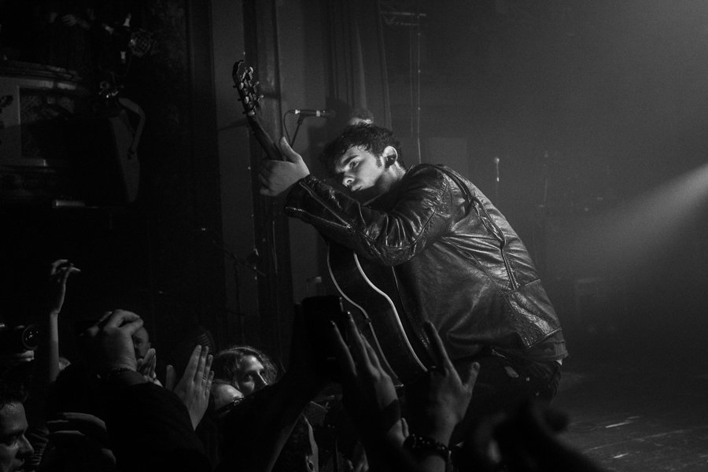

The portfolio of
Valentin
Malherbe
Product designer living in France, passionate about photography.
learn more- scroll to position
- Nature
- Human
- Music Kill the title overlay
Music
Hanni El Khatib
Taken at Theatre Trianon in Paris in February 2014 on the "Specter At The Feast" tour.
Paris 2014 view all

Black Rebel Motorcycle Club
Taken at Theatre Trianon in Paris in February 2014 on the "Specter At The Feast" tour.
Paris 2014 view all
